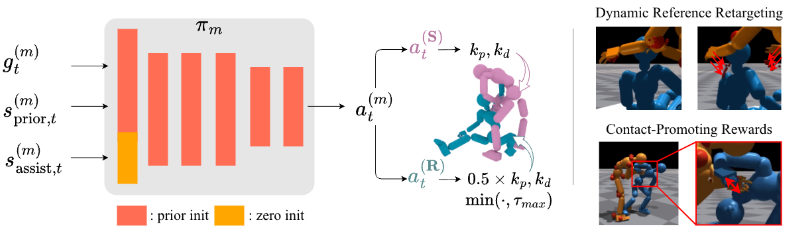

Overview of AssistMimic. We train tracking-based humanoid control policies for both the recipient and the supporter, optimizing them to imitate a paired reference motion sequence. Our architecture builds on the single-agent tracking framework of PHC, extending it with partner-aware state inputs and augmenting standard imitation rewards with recipient-aware reference retargeting and contact-incentivizing reward terms.
Multi-Agent RL Formulation
We model close-range assistance as a multi-agent MDP where both the supporter and recipient learn tracking policies jointly. This enables reactive and physically consistent coordination between agents.
Motion Prior Initialization
We initialize both policies using parameters from a pre-trained single-person tracking controller, allowing them to inherit locomotion skills before acquiring role-specific behaviors.
Dynamic Reference Retargeting
We continuously adjust the assistant's hand targets to preserve their intended relative position with respect to the recipient's body, enabling adaptive support.
Contact-Promoting Rewards
We introduce contact-incentivizing rewards when the recipient's body is in close proximity to the assistant's hands, prioritizing functional support over strict kinematic tracking.